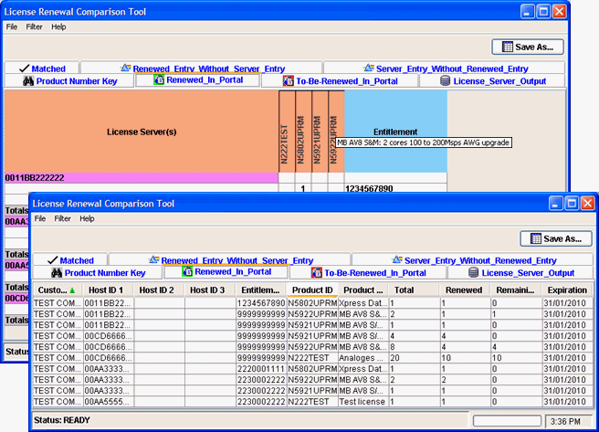

Viewing and sorting data
Toggling between list and matrix views plus sorting data columns enables you to improve readability or display data according to your needs.
About this task
You can toggle the following tab views:
- Renewed_in_Portal
- To_Be_Renewed_in_Portal (if data loaded)
- License_Server_Output
Data columns can be sorted in list views that show the raw data without coloring. The current sort column is marked by a green arrow, pointing either upwards (ascending values) or downwards (descending values).
Colored matrix views are fixed and cannot be sorted. In this matrix view, you can display tooltips with a product description for each product number.
Before you begin
You must have loaded all files and the tool must have completed the comparison before you can toggle between views or sort data.
Procedures
To toggle a view
Right-click a supported tab and click Toggle ... View.
The tab switches either from a colored matrix view to a list view or vice versa.
To sort a data column
In a list view, click any data column header. The table is rearranged based on the ascending alphanumerical order of this column. A green arrow indicates the sorted column.
Subsequent clicking of the column header reverses the sort order.
To display tooltips
In a colored matrix view, move the pointer over a product number in the header. A tooltip displays the product description.
Example
